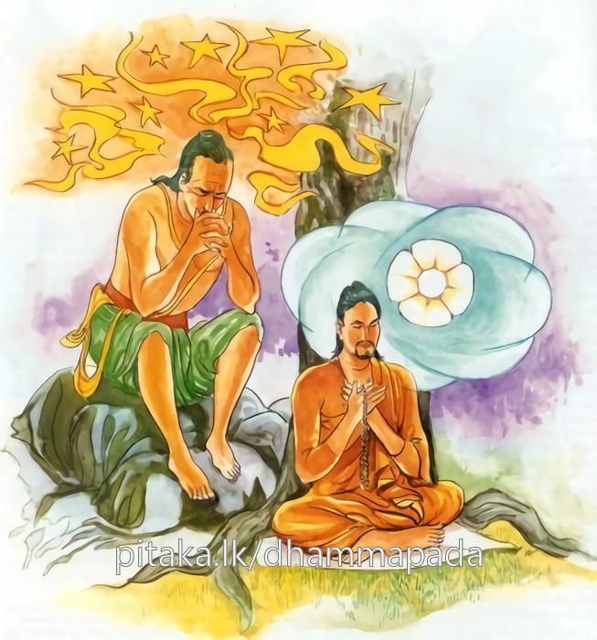

3-3 . තුන්වන කළකිරුණු එක්තරා භික්ෂුවකගේ වස්තුවයි.
මෙම කතාව සද්ධර්ම සාගරයෙන් ද කියවන්න.
සුදුද්දසං සුනිපුනං යත්ථකාමනිපාතිනං
චිත්තං රක්ඛෙථ මෙධාවී චිත්තං ගුත්තං සුඛාවහං.
දක්නට ඉතා නොපිළිවන්, ඉතා සියුම් වූ, යම් කැමැති අරමුණෙක බැස වැටෙන සුලු වූ සිත නුවණැත්තේ රක්නේ ය. සිත (නොයෙක් අරමුණෙහි විසිර පැවැත්ත නො දී එක් භාවනා අරමුණෙහි පිහිටුවා) රක්නා ලද්දේ ලොවී ලොවුතුරා සුව එළවන්නේ ය.

සුදුද්දසං යනාදි මේ ධර්මදේශනාව බුදුරජාණන්වහන්සේ සැවැත්නුවර වාසය කරන කාලයෙහි එක්තරා කලකිරුණු භික්ෂුවක අරභයා දේශනා කළසේක. ශාස්තෘන්වහන්සේ සැවැත්නුවර වාසය කරන කාලයෙහි එක් සිටුපුත්රයෙක් තමන් හා කුලුපග තෙරනමක් වෙත ගොස්, ස්වාමීනි, මම දුකින් මිදෙනු කැමැත්තෙමි. මට දුකින් මිදෙන මගක් කියා දෙනු මැනවැයි කීවේය. ඇවැත්නි, යහපති, ඉදින් දුකෙන් මිදෙනු කැමැත්තෙහි නම් වාරය අනුව දෙන දන් දෙව. දෙසතියකට වරක් දෙන දන් දෙව. වස්විසූවන්ට දන් දෙව. චීවරාදි ප්රත්ය දෙව. තමන්ගේ වස්තුව තුනට බෙදා එකක් කර්මාන්ත සඳහා යොදව. එකකින් අඹුදරුවන් පෝෂණය කරව. එකක් බුදුසසුනට දෙවයි ඒ තෙරණුවෝ කීහ.
ඔහුද යහපති ස්වාමීනියි කියා, කියාදෙනලද පිළිවෙලටම ඒවා ඉටු කොට නැවත තෙරුන්ගෙන් මෙසේ ඇසීය. ස්වාමීනි දැන් ඊළඟට කුමක් කරන්නෙම් ද? ඇවැත්නි, තිසරණය සමාදන් වෙනු. පන්සිල් ගනුව. ඒවාද සමාදන්ව ඊළඟට කළයුතු දේ විචාළේය. එසේ නම් දශසිල් සමාදන් වෙනු. හෙතෙම යහපතැයි දශසිල් සමාදන් විය. මෙසේ ඔහු පිළිවෙලින් (අනුපූර්ව) පින්කම් කළ හෙයින් අනුපුබ්බසෙට්ඨිපුත්ත යන නම ලැබීය. දැන් ඉතින් ස්වාමීනි, මින් ඉදිරියට කළයුතු දේත් ඇද්දැයි විමසා, එසේ නම් පැවිදි වන්නැයි කී පසු ගෙදරින් නික්මී අවුත් පැවිදි විය.
ඒ තෙරුන්ට එක් ආභිධම්මික භික්ෂුවක් ගුරුවරයා විය. එක් විනයධරනමක් උපාධ්යාය විය. උපසම්පදාව ලත් උන්වහන්සේ ආචාර්යවරයා ළඟට පැමිණි විට අභිධර්මය පිළිබඳ ප්රශ්න කීවේය. මේ බුදුසසුනෙහි මේ මේ දේ කිරීම අවශ්යයි. මේ මේ දේ කිරීම නොවටී ආදි වශයෙනි. උන්වහන්සේ උපාධ්යායයන්වහන්සේ ළඟට ආ කල විනය පිළිබඳ කරුණු කීහ. මේ බුදුසසුනෙහි මේ දේ කිරීම වටී. මේ දේ කිරීම නොවටී. මෙය කැපයි. මෙය අකැපයි ආදී වශයෙනි.
තෙරණුවෝ, අනේ මා කෙළේ බැරෑරුම් ක්රියාවකි. මම දුකින් මිදෙනු කැමැත්තෙන් පැවිදිවීමි. මේ සසුනෙහි අතදිගඅරින්ටවත් ඉඩක් නොපෙනෙයි. ගෙදර සිටම දුකින් මිදෙන්ට පුළුවනි. මා ගිහි විය යුතු යයි සිතූහ. හෙතෙම එතැන් පටන් කළකිරී නොඇල්මෙන් පිළිකුල්භාවනා නොකරයි. ප්රාතිමෝක්ෂාදිය උදෙසීම නොකරයි. ක්රමයෙන් කෙට්ටුවී, දිරාගොස් කුෂ්ටරෝගයෙන්ද පෙළුණේය.
ඉන්පසු ළපැටි සාමණේරවරු, ඇවැත්නි ඔබ සිටි තැනම සිටියි. ඉඳගත් තැන ඉඳගෙනමය. පාණ්ඩුරෝගියෙක් මෙනි. කෙට්ටු වී දිරාපත් ව කුෂ්ටරෝගයෙන්ද පෙළෙයි. ඔබ කුමක් කෙළෙහිදැයි ඇසූහ. ඇවැත්නි මම කළකිරුණෙමි. කිනම් කරුණක් නිසා ද? ඒ භික්ෂුව එම ප්රවෘත්තිය කීවේය. සාමණේරවරු මේ පුවත ඒ භික්ෂුවගේ ආචාර්ය උපාධ්යායවරුන්ට දැන්වූහ. ආචාර්ය උපාධ්යායවරු ඔහු කැඳවාගෙන බුදුන් හමුවට ගියාහුය. මහණෙනි කුමක් සඳහා ආවහුදැයි විචාළහ. ස්වාමීනි, මේ භික්ෂුව ඔබේ සසුනේ කළකිරී සිටී. මහණ ඒ බව සැබෑද? සැබවි ස්වාමීනි, කවර කරුණක් නිසාද, ස්වාමීනි, මම දුකින් නිදහස් වීමේ බලාපොරොත්තුවෙන් පැවිදිවීමි. ඒ මට ආචාර්යයන්වහන්සේ අභිධර්මකථා කියති. උපාධ්යායයන්වහන්සේ විනය කථා කියති. ඒ මම මේ ශාසනයෙහි අතදිගහරින්ටවත් ඉඩක් නැත, ගිහිවී දුකෙන් නිදහස්වෙන්ට පුළුවනියි තීරණය කළෙමි. හොඳයි මහණ, එසේ නම් ඔබට එකම දෙයක් රකින්ට පුළුවන්ද, වෙන කිසිවක් රකින්ට නැත. ස්වාමීනි, ඒ කුමක් ද? ඔබේ සිත පමණක් රකින්ට පුළුවන් ද? ස්වාමීනි, පුළුවනි. එසේ නම් තමාගේ සිත පමණක් රැකගනුවයි මේ අවවාදයදී මෙම ගාථාවද වදාළහ.
දකිනු බැරි සියුම් වූ
කැමති හැමතැන ලගිනා සිත
නුවණැත්තා නිති රකියි
එරැකි කල සුවදායකයි
මෙහි සුදුද්දසං යනු හොඳටම සියුම්. අතිශයින්ම මොළොක් යන අර්ථයි. යත්ථකාමනිපාතිනං යනු ජාති ආදි කිසිම භේදයක් නොසලකා ලැබිය යුතු නොලැබිය යුතු, යුතුඅයුතු තැන්වල යම් කැමති කැමති තැනකට වැටෙන බවයි. වැටෙන ස්වරූපයයි. චිත්තං රක්ඛෙථ මෙධාවී යනු අන්ධ බාල පෘථග්ජනයාට, නුවණක් නැති පුද්ගලයාට තමන්ගේ සිත රැක ගැනීමට සමර්ථ කමක් නැත. සිතට වසඟ වී අභාවයට හා විනාශයට පැමිණෙයි. නුවණැත්තා වනාහි පණ්ඩිතකමින් සිත රැක ගැනීමට සමර්ථ වෙයි. එහෙයින් ඔබත් සිත පාලනය කරව. මෙය වනාහි චිත්තං ගුත්තං සුඛාවහං සෝවාන් ආදී මාර්ග සැප, ඵලසැප නිවන් සැප ගෙන දෙන්නේය යන අර්ථයි.
දේශනාවසානයෙහි ඒ භික්ෂුව සෝවාන්ඵලයෙහි පිහිටියේය. අනිත් බොහෝ අයත් සෝවාන් ආදි තත්ත්වවලට පැමිණියාහුය. දේශනාව මහජනයාට ප්රයෝජනවත් විය.